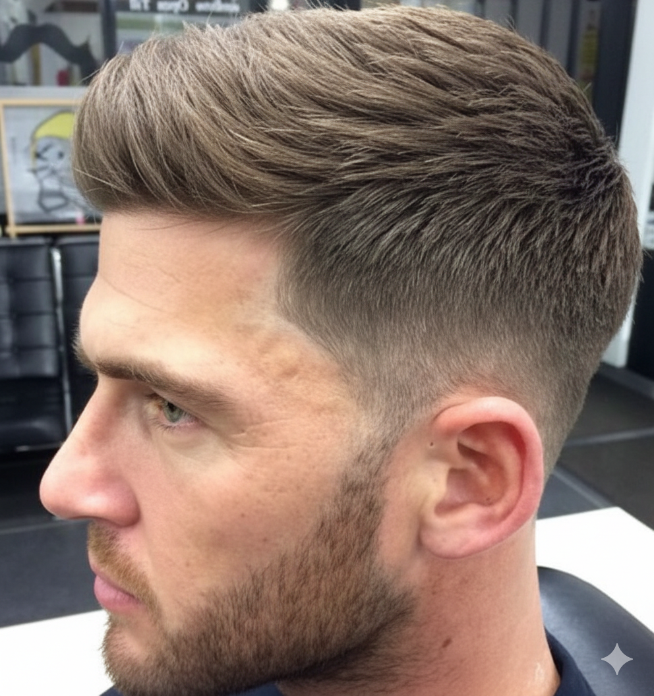

Clase 5: Fade a 1
Clase 5: Degradado o Fade (Guía N°1)
¿Para Quién es Este Corte?
El "Fade a 1" es un corte muy versátil, perfecto tanto para jóvenes como para adultos. Combina la elegancia de un estilo formal con un toque de modernidad. Si sigues los pasos con precisión, puedes realizarlo en unos 20 minutos.
Técnica Paso a Paso
- Preparación: Peina a contrapelo y establece tus divisiones.
- Base (Guía N°1): Comienza con la guía N°1, la protagonista de este corte. Pásala hasta un punto ligeramente por debajo de la curva de los contornos.
- Transición (Guía N°2 y N°1.5): Ahora, pasa la guía N°2. Sobre la línea que esta deja, trabaja con la guía N°1 y 1/2 con la palanca abierta para empezar a borrarla.
- Pulido: Si la línea persiste, cierra la palanca de la guía N°1 y 1/2 y repasa. Como último recurso, utiliza la guía N°1 con la palanca abierta para eliminar cualquier marca residual.
- Conexión Final: Para integrar todo el corte, pasa la guía N°3, luego la N°4 por encima, y conecta finalmente con tijera.
